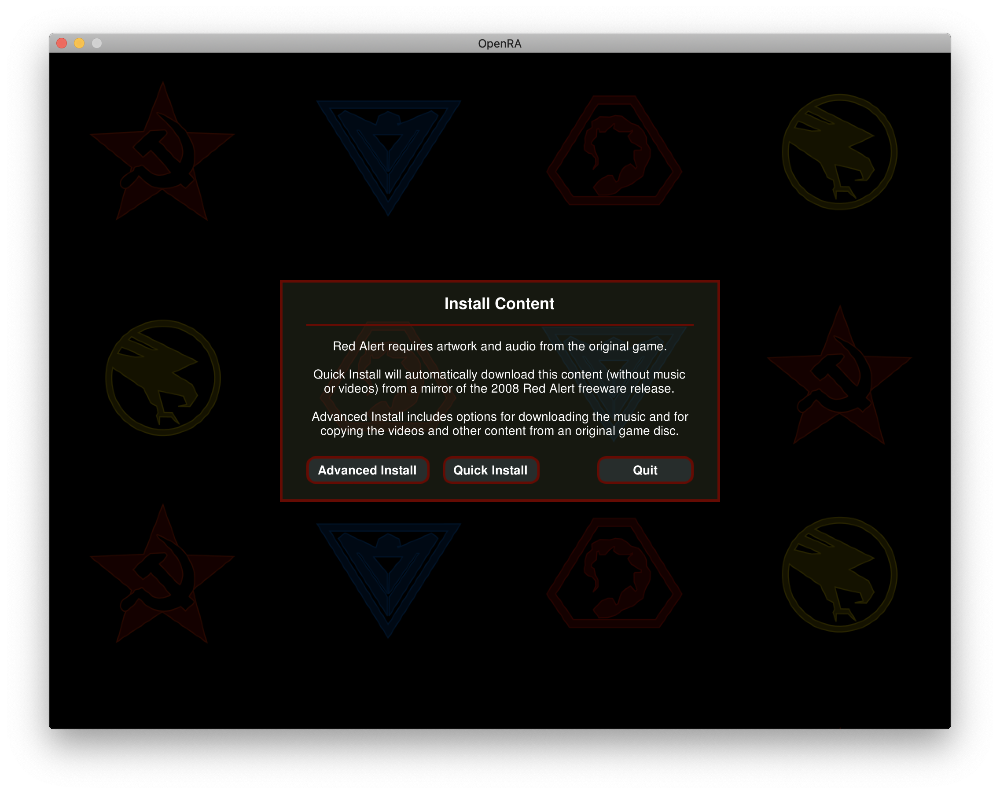
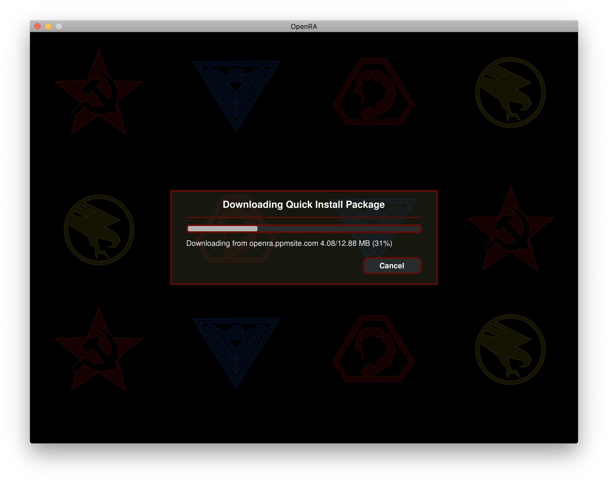
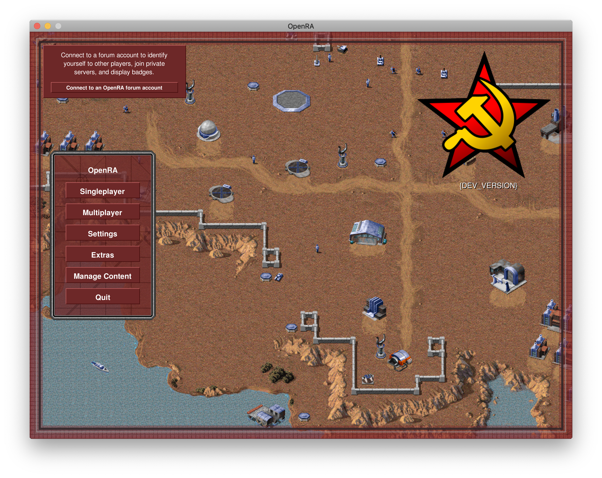

Introduction
Welcome to The OpenRA Book!
OpenRA is an RTS game engine that:
- is completely open-source (GPLv3+)
- is data-driven
- is highly-configurable
- is built entirely by volunteers
- is implemented in C# on the .NET Framework
- supports map scripting via Lua
- implements the entity-component-system architecture
- auto-magically discovers mods
- includes the official mods: Tiberian Dawn, Red Alert, and Dune 2000
Who This Book Is For
- Players
- Modders / Game Makers
- Developers
Assumptions This Book Makes About You
Players
You have:
- played one of the above-listed games (or their sequels), or an RTS game in general
- the latest stable version of OpenRA installed
- the original Red Alert assets (either a CD-ROM / ISO or you'll let OpenRA install these for you)
Modders / Game Makers & Developers
You are familiar and comfortable with:
- basic text editing
- reading and writing C#
- using a terminal (such as
cmd.exeon Windows,Terminal.appon macOS,Xterm/Konsole/something else on GNU/Linux) git
How to Read This Book
The current vision for this book is to have 3 sections, in the following order:
In general, the book assumes that you're reading the section(s) relevant to you in sequence from start to finish.
The section order is deliberate because knowing how to play the game is important to being able to create games/mods that players want to play and knowing, at a high-level, how game making / modding is done will help you implement better, reusable, modder- and player-friendly functionality.
Later chapters build on concepts in earlier chapters, and earlier chapters might not delve into details on a topic; we typically revisit the topic in a later chapter.
Truly there is no wrong way to read this book: if you want to skip ahead, go for it! You may have to jump back to earlier chapters, or get help from the community, if you experience confusion. But do whatever works for you.
You can dive in by reading the glossary page, then the Getting Started chapter for modders right now!
Community & Social Media
-
Discord - discuss modding, engine development, game playing, etc.
-
Twitter - @openra
-
Reddit - /r/openra
Glossary
Mod
The engine has a concept called "mod"s which are, essentially, a collection of asset and MiniYaml files.
In most cases, OpenRA-based games will have a single "mod." Think of this in the context of the Tiberian Sun you could previously buy that included the Firestorm expansion. That would be a case of multiple "mod"s in a single game.
Note that "mod" is in quotes because you're actually working on games but OpenRA's history is tied to the 1st generation Westwood Studios RTSes (Tiberian Dawn, Red Alert, and Dune 2000) which were modified by players so the term "mod" is used throughout the OpenRA codebase, documentation, etc.
MiniYaml
A custom textual file format used for many things in OpenRA.
These files are what the engine reads to, for example:
- determine which mod(s) are installed
- locate asset files
- determine stats for different unit/building/etc. types
- build the UIs used in-game
Manifest
The mod.yaml MiniYaml file in the root of each mod.
This file is what declares a directory as a mod, it is required.
Asset
This is a generic term that encompasses image files, audio files, container
files (such as .zip or .mix), and basically anything else that isn't
MiniYaml.
Actor
An actor is the entity part of the entity-component-system.
Technically, an actor is a collection of traits.
In the real-world example in chapter 2 you can see the
actor E1 defined with the following traits:
BuildableValuedTooltip
Note that, for example, Queue (in that same example) is not a trait.
It is a property of the Buildable trait.
Inherits technically isn't a trait, it is a MiniYaml mechanism that is
explained in the chapter 2 link above.
TraitInfo
Technically a trait info is the component part of the entity-component-system architecture.
The properties of a TraitInfo can be set in MiniYaml.
Look at the linked actor definition and Valued.cs's
ValuedInfo class together.
Do you see how ValuedInfo has a Cost property that is of type int?
Now back in the MiniYaml you'll find Cost: 100.
That node is read by the engine (via the FieldLoader class, which will be
covered in a future chapter) and the Cost property of ValuedInfo is set to
100.
Trait
Conceptually a trait is simply a characteristic of an actor.
Let's look at Valued.cs, for example, which contains
two classes:
ValuedInfoValued- A Trait implementation
Technically a trait is the system part of the entity-component-system architecture.
Systems might:
- hold state (ex. "Current HP is 43")
- interact with other systems (ex. "I just got healed, play a healing animation")
Armament
This is another word for "weapon."
Playing
PLACEHOLDER
Installing OpenRA
Download the latest installer from the official website.
Release builds are stable builds, while Playtest builds are preview builds of the next upcoming release.
To play, use the start menu shortcuts placed under "OpenRA". On the first launch, the game will download (recommended) or extract the content files from an installation CD. Consult Game Content for further information.
Portable installation
You can force OpenRA to store files in a portable installation mode by creating a folder named Support in the installation folder.
This page has yet to be mirgated and referenced from SUMMARY.md. Please visit the old Wiki page instead.
Strategy Guides
These guides are intended to help the new user get a quick rundown of the default mods. It presumes you have a basic familiarity with the units described.
OpenRA TD mod newbie tips:
-
Every game you play is being recorded. That way you can check later, what other players did and try to copy tactics that worked well. To Access replays, go to Main Menu->Extras->Replays
-
In TD (short for Tiberian Dawn - this mod) every factory has its own building queue. That means, that you can build units from every factory at the same time. To access the different queues, click the numbers in the building menu. Or just click the different factories. This means, that expanding to get more money is very important, to increase your output of tanks.
-
Never, NEVER build silos, for the above reason. Saving money does not win games. Building tanks does. Ignore the "Silos needed" sound - you do not lose money, by not being able to process tiberium. Harvesters only unload, when you have storage for the tiberium.
-
Build Refineries as close to Tiberium as possible. Time spent driving, is time spent not making money.
-
Press B+Click to place beacons. They make a PING sound. In addition, you can press Space to get to beacons instantly - for example to see, what your teammate wants you to see.
-
You can help repair buildings of your allies. Do that to keep your allies buildings alive.
-
One blossom tree produces enough tiberium for one harvester, long-term. However, you can have multiple harvesters around, as long as there is still enough tiberium left. Also, you should try to keep no more than 3 Harvesters per refinery. 2 Harvesters per refinery is even better.
-
Spamming tanks is usually the most standard way of playing. You usually can't do too much wrong with that.
-
Don't turtle. It doesn't work. Static defense is only useful in limited circumstances and mostly on chokey maps. Also, don't just build a barracks first and waste your money on infantry spam. Infantry supports tanks, but is bad as a main force. That being said, going aircraft is also not a good choice for your main force.
-
Press A+Click to order your units to attack-move. This is better than just move, because they will shoot at enemies they encounter, making them less vulnerable.
-
You can assign unit groups, by selecting units and pressing CRTL+Number. Double-Tapping said number will also automatically center your camera on the group, making managing multiple unit groups easier.
-
Have some patience. TD waiting times can be quite long, depending on the time of the day and other factors. If you have no patience and want "games nao" then you'll probably prefer the RA mod. However this does not mean, you should simply go afk. If you leave for a bit, tell others beforehand. Also, if you're using windows, you can just use Alt+Tab to switch windows and do something else for a while, until a game starts. You'll probably hear lots of beeping, if the people in the chat want your attention.
1. Economy
You want to have at least 2 refineries (or 2 harvesters) early in the game in order to be competitive. If you have more money, you can beat your opponent by overwhelming them with units. Generally, at any point in the game, there is a trade-off between expanding your economy, building more units or increasing your tech level.
2. Faction Summaries
Brotherhood of Nod
Nod adopts hit-and-run tactics, opting for units that are fast, inexpensive or long range. The Recon Bike and Stealth Tank are the classic examples of this. The Light Tank and Flame tanks are also relatively fast for tanks, and can outrun GDI's Medium Tank and MLRS (rocket artillery). The Light Tank's maneuverability can allow it to maneuver and shoot and avoid shots a bit better than the slower Medium. The Flame Tank's armor and speed allow it to charge enemy artillery and quickly dispatch them. Nod's Mobile Artillery is quite powerful and cheap, but also very slow and dangerous--when it is killed, it has a 75% chance of exploding and doing serious damage to nearby units; if you have many artillery units bunched together, it can cause a catastrophic chain reaction of explosions! Spread them out for best results. Artillery also have a minimum range of 2 and can be killed by units who get very close.
Nod's end-game unit is the Chem Warrior, which is as effective vs. infantry as the Flamethrower, but it also effective against armor. It can also walk through tiberium quickly and without taking damage. The flamethrower is significantly more cost- effective than chem warriors against light vehicles and buildings, even though the chems do more damage; the chems have the further advantage of longer range than the flamers. Chem troopers can be deposited into a tiberium field by a Chinook transport helicopter and wait for enemy harvesters to show up.
Nod's end-game support power is the Nuclear Strike. It can destroy any building with a direct hit, except for another Temple of Nod. The nuke can also take out nearby buildings and can be quite devastating to a base whose buildings are built closely together. To protect yourself against nukes, build your base with distance between structures; note that this strategy has the trade-off of making your spread-out base a bit harder to defend. Nukes can be used tactically against units, but the nuclear blast takes a while to arrive at its target, and by then units are likely to have moved away.
Nod's Apache helicopter has a powerful machine gun which quickly tears enemy infantry to shreds. It is also quite effective against vehicles and can be used to attack enemy artillery. Its damage against heavy armor is far more modest however and it is not quick at destroying tanks. Used in small packs they are highly effective at harassment and can raid undefended bases quite easily. To defend against air units, Nod has a mobile SAM launcher which is quite powerful and cost-effective against air units (but cannot target ground units).
Global Defense Initative (GDI)
GDI's main style is to win with expensive, heavy armor which travel at slow speeds, and with overwhelming firepower. All of GDI's vehicles have relatively high hitpoints for what they are, with the exception of the Orca aircraft which is quite fragile. GDI's end-game Mammoth Tank is the definition of GDI's style, with its heavy armor, slow speed and firepower combination of dual cannons and missiles. The MLRS rocket artillery is also relatively slow (but still mobile) and does powerful damage to vehicles and tanks. In combination, these two units can be difficult to beat. One advantage of the MLRS is that it is faster than Nod's artillery and shoots its missiles faster and more accurately; this at the expense of costing twice as much. This advantage gives it an edge in the battlefield where it can "shoot and scoot" before Nod artillery can counter-attack effectively. It remains vulnerable to rushes from recon bikes, tanks, flame tanks or even nod buggies, so keep your MLRS closely guarded. Your MLRS units also have a minimum range of 3, so they cannot fire at enemies who get too close, making a rapid close-in a choice strategy to kill them, even with weaker units. Getting to point-blank range with an MLRS can also attract fire from nearby MLRS which can kill it.
Despite GDI's straightforward focus on raw power, it still has a few units which allow it to use more flexible tactics which rely on speed. GDI can use the mobility of the Armored Personnel Carrier to transport infantry quickly across the battlefield, especially early-game. GDI's infantry is generally weaker than Nod's, but this mobility advantage can allow GDI to mount impressive attacks. Deploying an APC full of rocket soldiers can give enemy tanks a nasty surprise on the battlefield. Infantry can also be deployed near an enemy's base, allowing quick destruction of an enemy's base by rocket soldiers or grenadiers (latter requires tech up to Communications Center). The APC is GDI's anti-air unit, with an AA gun on its turret. The APC can also be used to rush enemy artillery due to its speed and heavy armor, and its gun which is good against light vehicles.
The end-game Commando unit can be quite powerful vs. enemy infantry. It can't hurt vehicles, but it can quickly demolish buildings by planting explosive charges, causing havoc if released in an enemy base by an APC or Chinook transport helicopter. If you deposit a few commandos amongst your vehicles, they can keep enemy units at bay with their powerful sniper rifle. But at $1000 each, they do not come cheap, and have to kill several many enemy units to be worth the investment.
GDI's superweapon is the Ion Cannon, which is unlocked by building an advanced communication center. The ion cannon can instantly destroy a small concentration of troops, or destroy most buildings. It can be used to destroy the enemy's refineries or communications center, but not their vehicle production facilities or top-tier tech buildings.
GDI's Orca aircraft is specialized against vehicles and buildings, and are nearly useless against infantry. While their damage can be impressive, they only have 90 hit-points, far less than the Nod Apache's 125 HP, and should be used for hit-and-run attacks before retreating to safety instead of staying on the battlefield longer than necessary to destroy their target. The Orca differs from GDI's normal style in that they are fast and have light armor, but they are very useful if used wisely. They can be very useful at destroying enemy artillery, flame tanks or tanks that threaten to break through your lines and attack your vulnerable units in the rear. A small group can also be effective at harvester harass or destroying undefended turrets. They are quite vulnerable to anti-air fire from Nod's mobile SAM launcher (which is only half the price of an Orca), GDI's APC, rocket soldiers and recon bikes. End-game units like the Stealth Tank and Mammoth will quickly destroy an Orca with their rockets, and should only be attacked by Orcas if they are distracted while engaging another unit.
3. Airstrikes
Airstrikes are a powerful support power that both factions get, and is unlocked from building the Communications Center and which come available on a 3-minute cycle. They can very effectively destroy large concentrations of infantry, and can destroy some buildings like Guard Towers or Turrets. They can be used to destroy a large incoming force that is threatening your base or to help you attack an enemy base by blowing a hole in their line of turrets/GTs.
It may be hard for new players to see the difference between the 3 houses in Dune 2000 because the houses share so many units in common. The main differences between the houses are a) their unique units and b) their respective combat tanks. The unique traits of each house are listed below.
House Atreides
Atreides's fighting style is to use long-range units with reasonable speed and maneuverability.
Atreides' unique units:
- Grenadier Grenadiers are an infantry artillery unit which are strong against buildings. They have a chance to explode on death, so don't group them together.
- Atreides Combat Tank The Atreides combat tank has medium armor and speed. It is not as quick as Ordos ones, but not as armored as Harkonnen ones either.
- Sonic Tank The Atreides' other unique vehicle is the sonic tank. Building the Ix Research Center unlocks this unit. Its weapon is long range and quite powerful, but the tank itself has a relatively low health. Use its superior range to keep it away from enemy units. Note: It cannot be bought from the starport.
- Fremen Once you get a palace, you can build the fremen infantry unit. They are invisible and have a machine gun, as well as a rocket launcher. Note: Cloaked units can be detected by turrets and other infantry.
- Airstrike The Atreides also get the airstrike support power after building and upgrading the High Tech Factory. Airstrikes are faster than missiles, and so can be used to attack large groups of enemy units.
House Harkonnen
Harkonnen's fighting style is to use slow but tough units.
Harkonnen's unique units:
- Sardaukar These powerful heavy troopers have a machine gun that's effective against infantry, and a rocket launcher for vehicles. Building a High Tech Factory unlocks this unit.
- Harkonnen Combat Tank The Harkonnen Combat Tank's advantage is its toughness. It has more hitpoints than other tanks. This comes at the expense of having slower movement, turn and fire speed.
- Devastator The Devastator tank has heavy armor and a very powerful plasma cannon. It is also very slow. Building the Ix Research Center unlocks this unit.
- Death Hand Missile After building the Harkonnen Palace, you get the ability to launch the Death Hand Missile anywhere on the map. It takes some time to arrive at its destination, so it is best suited for destroying enemy structures.
House Ordos
The Ordos rely on hit-and-run tactics with fast and stealth units. In the late-game they use specialist units like the deviator (which can turn enemy units to your side) and the saboteur which can destroy enemy buildings.
Ordos' unique units:
- Raider Trike The raider trike replaces the standard Trike for Ordos. It is a powerful early-game unit, which maintains relevance throughout the game. It costs $300 instead of $250, but its advantages are well worth the cost. It is faster than regular trikes, and its gun does far more damage. The Raider Trike is powerful enough that it can be used early-game to harass an opponent's harvesters, despite their heavy armor. Raider trikes can hold their own against longer-range Quads, as long as they can get close.
- Stealth Raider Trike Once you build a High-Tech Factory, you can build a cloaked raider trike for $400. It can ambush enemy units and then quickly retreat to safety. A large group of stealth raiders can be effective at ambushing harvesters or sneaking into an enemy base. Note: Cloaked units can be detected by turrets and infantry.
- Ordos Combat Tank The Ordos combat tank's advantage is its speed. It has faster movement, turn and fire speed. The Ordos tank's high speed means it can move in a group with other fast units like trikes and quads, allowing you to avoid artillery fire, attack vulnerable targets (such as artillery or harvesters), and then retreat before the enemy can organize a counterattack. But they have less hitpoints than other factions' Combat Tanks.
- Deviator The Deviator fires rockets which give you temporary control of whatever units it hits. You wreak havoc on large formations by turning your opponent's units against each other. Building the Ix Research Center unlocks this unit.
- Saboteur This is a commando unit that can be used to demolish enemy buildings quickly. Building a Palace unlocks it.
Shared Units
- Light Infantry Light Infantries are basic infantry armed with automatic rifles. They are good vs. infantry.
- Trooper Troopers are infantry armed with a rocket launcher. They are good vs. tanks and vehicles.
- Engineer Engineers can capture enemy structures when they enter them. Defensive structures are not captureable.
- Thumper Infantry Thumper Infantries can be deployed on a sand area to take attention of the worms there. You can deploy them on an empty place to keep sandworms away from your Harvesters or to enemy Spice to make them eat enemy Harvesters insted.
- Trike Trikes are fast scouts which are very effective against infantry. They can also be fairly effective against quads and artillery units.
- Quad Quads are built at the Light Factory, and unlocked by upgrading it. It has dual missile launcher with a moderate range which are effective against vehicles and tanks. Quads are somewhat effective against buildings, and poor versus infantry.
- Harvester Harvesters collects Spice and carry them to Refinery to process them. A Harvester is given with a Carryall when a Refinery is built and additional Harvesters can be build from Heavy Factories. They have good armor to protect them. A Harvester can carry 700$ worth of Spice.
- Siege Tank The Siege Tank is built at the Heavy Factory, and unlocked by upgrading it. It is somewhere between a tank and artillery, and its artillery shell has a medium-long range of 5 and a half cell. It has heavy armor to protect it from light machine gun fire, but still has much less health than combat tanks. Its weapon is very effective against infantry and structures. It is good against light vehicles, and but not so well against tanks.
- Missile Tank The Missile Tank is built at the Heavy Factory, and is unlocked by the Ix Research Center. It has a range of 6. It fires volleys of 2 missiles. The rockets do excellent damage vs. tanks, good damage vs. vehicles, and moderate damage vs. turrets and buildings. They are not much good vs. infantry. Ordos can't build Missile Tanks from Heavy Factory but only buy from Starport.
- Carryall Carryalls are automatic aircraft that carry Harvester between Refineries and Spice. It also carries damaged vehicles to Repair Pad when units ordered to.
Build Order
In Dune 2000 you need to build Concrete Slabs before placing your buildings or they start with half health and will be damaged to that point over time even if you repair it. But placing them also may slow you down a little bit. Most effective way to use Concrete is to place them below Wind Traps as they provide less power if damaged and not the rest if you are planning to rush an attack. If you plan to turtle concreting everthing is a better option.

When teching up there are some ways you can go with. Barracks can be directly built after Wind Trap. But you may wanna go with a Refinery first if you want a better economy. After Refinery, Heavy Factory and Light Factory can be built. Construction Yard, Barracks, Light and Heavy Factory can be upgraded in order to enable more advanced units and structures. You can select to build a Light Factory if you wanna do rushes, especially if you are Ordos as they have Raiders instead of Trikes. Or you can build a Heavy Factory to build additional Harvesters and Tanks.
Outpost is available after Barracks and allows you to see the Radar. It also enables some other buildings, but some of those requires other buildings too. Outpost alone only enables High-Tech Factory. Which allows you to build Carryalls, in order to carry your Harvesters between Refineries and Spice. Atreides can also get Airstrike by upgrading the High-Tech Factory. Last thing High-Tech Factory does is enabling Grenadiers for Atreides, Sardaukars for Harkonnen and Stealth Raider for Ordos.
Heavy Factory Upgrade enables Repair Pad, which you can use to repair your vehicles and tanks. It also enables MCV, which can be deployed into additional Construction Yards to expland your base.
Outpost and Heavy Factory enable Starport. With a Starport, you can get some units with a higher cost but with a quicker speed. Units you can build from Starport are Trike, Quad, Harvester, Combat Tank, Siege Tank, MCV, Missile Tank and Carryall. Ordos can buy Missile Tank from Starport even tho they can't build it. But they can't buy Raider but Trike instead.
Outpost and Heavy Factory again also enable Ix Research Center. Which enables side specific advanced vehicles, Missile Tank and Palace. Missile Tank is only available for Atreides and Harkonnen, Ordos doesn't have it. Palaces also enable different units for each side.
There are 3 defensive structures on Dune 2000. Wall, Gun Turret and Rocket Turret. Walls and Gun Turrets are available after Barracks. Walls can block enemy units from entering your base, it also blocks the fire of Combat Tanks and Harkonnen Devastators. Gun Turrets are good vs. vehicles. Rocket Turrets require Construction Yard Upgrade and Outpost. They are also good vs. vehicles but worse vs. infantry when compared to Gun Turrets. They can also attack air.
Modding
PLACEHOLDER
Getting Started
The ModSDK contains instructions.
Chapter 2: MiniYaml
Chapter Goals
By the end of this chapter it is expected that you will:
- understand the basic syntax of miniyaml files
- have changed a value in a MiniYaml file and observed the effect in-game
High-Level Steps
MiniYaml Syntax Basics
-
MiniYaml is a textual, line-oriented, indentation-driven format comprised of related nodes
-
Each line is a node
-
Nodes can be:
- key-only
- key, value, and optionally a comment
- comment-only
- empty
-
Node indentation is either 1-tab-per-level or 4-spaces-per-level
- Mixed indentation in a file is not permitted
-
Comments start with
#and span the remainder of the line- There is currently no support for escaping
#characters
- There is currently no support for escaping
Example
a-key
b-key:
c-key: c-value
d-key: # d-comment
e-key: e-value # e-comment
All of these lines/nodes are completely valid.
a-keyis key-only without a key-terminator (:)b-key:is key-only with a key-terminatorc-key: c-valueis indented 1 level (4 spaces) with a key and a valued-key: # d-commentis indented 2 levels (8 spaces) with a key and a commente-key: e-value # e-commentis indented 1 level (4 spaces) with a key, value, and comment
Node Relationships
The first 2 (non-empty) nodes are top-level (not indented).
Top-level nodes do not have parents.
The c node is a child of b since it is after b and indented 1 level further than b.
The d node is a child of c since it is after c and indented 1 level further than c.
The e node is a child of b, making it a sibling of c, since it is after b and indented 1 level further than b.
Invalid Example
a-key
b-key:
c-key:
d-key
# e-comment
A few things are invalid here!
-
The a node is indented so it must be a child of some node, but there is no node above it with 1-less level of indentation so we can not determine the parent
-
The b node is perfectly valid, when a node is not indented that indicates the end of the previous node tree
-
The c node is too-far indented (8 spaces vs the expected 4) so the parent cannot be determined
-
The d node is perfectly valid
-
The e node is perfectly valid as comment-only nodes are always valid
Now that you understand the basics of MiniYaml syntax and relationships you can move on to a real-world example.
A Real-World MiniYaml Example
We'll use part of RA's E1 definition in infantry.yaml
as an example:
E1:
Inherits: ^Soldier
Inherits@AUTOTARGET: ^AutoTargetGroundAssaultMove
Buildable:
Queue: Infantry
Valued:
Cost: 100
Tooltip:
Name: Rifle Infantry
Immediately, woah! There is a lot going on here!
Let's break this down line-by-line.
This is going to be long but is important to understand.
Line-By-Line
E1:
This node is top-level so it does not have a parent.
Since this node does not have a parent it is defining a new MiniYaml tree
with an id of E1.
Inherits: ^Soldier
This node is indented 1 level more than E1 so it is a child of the E1 node.
Inherits is a special key that indicates that ^Soldier's MiniYaml tree
should be inserted right where this node is (so this Inherits: ^Solder node
would be replaced with ^Soldier's tree), effectively merging the two trees.
Also note that ^ indicates the referenced definition is a
template/partial/abstract, meaning it can only be inherited from, not used
in any other way.
If that doesn't make sense now that is fine! We will come back to this in a future chapter.
Inherits@AUTOTARGET: ^AutoTargetGroundAssaultMove
Again we have an Inherits node but this key is a little different, it has:
- an
@symbol - an identifier after the
@
The key (pun intended) bit of information here is that MiniYaml trees must not have the exact same key at the same indentation level.
The reason for that restriction is that MiniYaml keys are also hashmap (typically called Dictionary in .NET) keys, so they must be unique.
The @ allows us to have multiple of the same child node with a postfixed
identifier.
Later on you will see an example of this suffix being used.
Buildable:
Nothing new is happening with this node.
It too is indented 1 level more than E1 so is a child of E1 and a sibling
of the two previous Inherits nodes.
Queue: Infantry
Can you guess this node?
I'm sure you figured it out before you even got here!
It is a child of Buildable, not E1, since it is indented 1 level further
than Buildable.
At this point the remaining nodes from the example ought to be obvious.
tip If anything is confusing please reach out on Discord!
Make A Change & Test It
Change the Cost node's value (currently 100) and see what effect that has
in-game.
You've just officially become a modder!
Editor
You can find the ingame map editor by going to "Extras" and then "Map Editor". Create a new map or open an existing one to start editing. While saving you can edit the map author, name, visibilty and select if you want to save it packed or unpacked. Save the map as packed in general unless you want to do manual edits. Only packed maps can be uploaded to the resource site.
Format
Maps are saved as zip compressed files with the oramap extension by default. You can open or unpack this file like any other zip. It is recommended to only re-pack unpacked maps via the Editor to avoid issues.
Custom Rules
Custom rules are added in the Rules section.
Scripting
Using png artwork
Frames
OpenRA supports reading frames directly from a png. For that to work the png needs to have specific metadata set. The most important values to set are 'FrameSize' and 'FrameAmount'.
Exporting Metadata
The easiest way to learn how OpenRA handles png metadata is to extract the metadata from an existing png. This can be done by using the "--png-sheet-export" utility command. That command will generate a yaml file with the same name the png has.
Importing Metadata
Importing metadata can be done by using the "--png-sheet-import" utility command or using a tool like TweakPng. That command will use a yaml file with the same name the png has.
Example
Define "example.yaml" with the following data for a png file that is 20x32 and has 4 frames.
FrameSize: 10,16
FrameAmount: 4
Put both yaml and png file in the same directory and run the "--png-sheet-import example.png" utility command. You can now delete the yaml file and move the png to your artwork folder.
Palettes
A palette can directly be created by using the PaletteFromPng trait on the world actor.
Campaign Creation
Campaigns are currently defined in the missions.yaml file of a mod.
That means it is not possible for custom maps to add themselves to a campaign.
If the file does not exist, define the following in mod.yaml where id is replaced by the Id of your mod:
Missions:
id|missions.yaml
Then create missions.yaml. The contents of that file are structured like the following:
CampaignName:
mapFoldernameA
mapFoldernameB
...
An example from Red Alert:
OpenRA Originals:
evacuation
exodus
infiltration
intervention
survival01
survival02
Utility
Mod & Map Linting
Developing
PLACEHOLDER
Chapter 1: Getting Started
Chapter Goals
By the end of this chapter it is expected that you will:
- have a copy of OpenRA's source code on your machine
- successfully run the included Red Alert mod
Steps
Step 1: Clone The Source Code
warning The commands listed here are for macOS and GNU/Linux users. Windows-specific instructions need to be written into this book.
-
Click the green "Code" button
- If the modal has the text "Clone with HTTPS" now would be a good time to configure GitHub access via SSH, then redo this step
-
Copy the presented URI (which should be
git@github.com:OpenRA/OpenRA.git) -
Open your terminal and navigate to where you want OpenRA's source code to live on your machine
- Learning exactly how to do this is out-of-scope for this book but the internet has many resources (such as this YouTube video)
-
Clone the source to your machine
$ git clone git@github.com:OpenRA/OpenRA.git openra
- Verify that it was cloned successfully by
ls-ing in the newly-createdopenradirectory
$ cd openra
$ ls
You should see the same file structure as on GitHub.
Assuming everything looks correct you are ready to run the Red Alert mod...
Step 2: Run The Red Alert Mod
warning The commands listed here are for macOS and GNU/Linux users. Windows-specific instructions need to be written into this book.
- Still in the
openradirectory, launch the engine directly into the Red Alert (ra) mod
$ ./laungame.sh Game.Mod=ra
Installing the mod's assets (one-time only)
If this is your first time running the ra mod (which it probably will be,
unless you've done these steps previously) you will need the original game
assets (art, audio, etc.).
Fortunately, the engine has a mechanism for asset downloading & installation
(defined by the ModContent node of the mod's manifest which we will cover
in a future chapter).
Double-fortunately, the games Tiberian Dawn, Red Alert, and Tiberian Sun were made freeware back in 2008 with the larger C&C community now hosting the original game assets.
The default mods each integrate with these file hosts so players can easily install these now-freeware assets.
When prompted (immediately upon attempting to launch the ra mod) click the
Quick Install button.

This may take a few minutes depending on your internet connection & speed.

Once the content finishes installing the engine takes you directly to the main menu of Red Alert.

Consider playing a few singleplayer skirmishes against some A.I. players to reward yourself.
tip Quit the game entirely and change the
raportion of the last command you ran in your terminal to another mod's ID (such asts) and see what happens